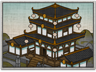

Requires
- Buildings:

- Arts:

Enables
- Buildings: 
- Units:


Spawned Garrisons
- Units:

Basic Building Statistics (can be modified by difficulty level, arts, skills, traits and retainers)
- Cost: 2800
- -1 to recruitment time of koryu units
Description
There is little skill in slashing; one must strike cleanly.
This koryu dojo allows the training of powerful naginata monk hero units if there is a Buddhist temple in the province. It also reduces the time needed to train other naginata units because of the excellence of teaching on offer. Naginatajutsu is, as the name suggests, the skill of fighting with a naginata. However, this is a modern style and roughly the equivalent of kendo, or Japanese fencing. It is a formalised sporting style rather than a set of practical combat techniques. Naginatajutsu still requires skill, of course, and a good deal of courage to face an equally-skilled opponent armed with a practice naginata. Koryu, on the other hand, probably translates best as "old school", and it is likely the techniques taught for battle with the naginata were different from today's kata. If nothing else, koryu would be entirely concerned with the practical business of chopping an opponent into quivering chunks, rather than trying to show proper form and impress tournament judges.